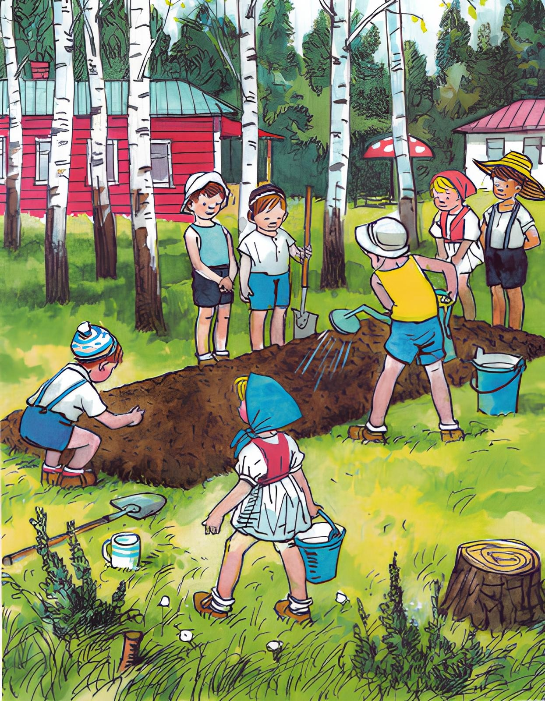
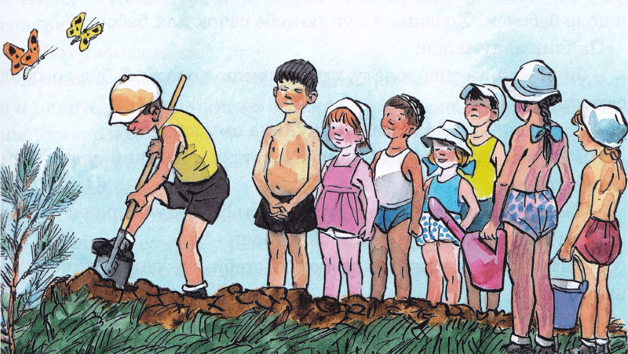
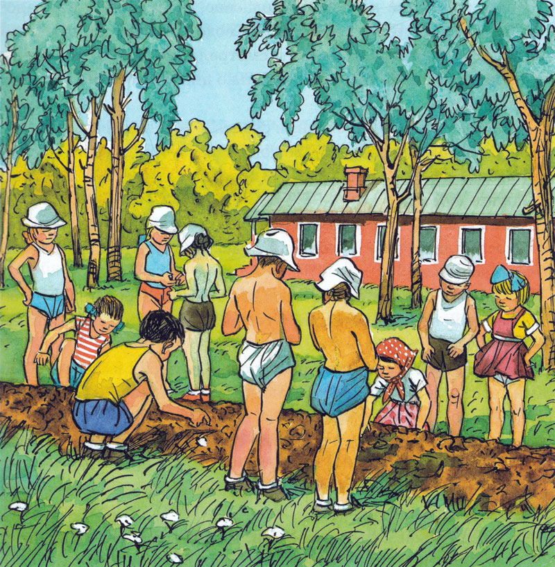
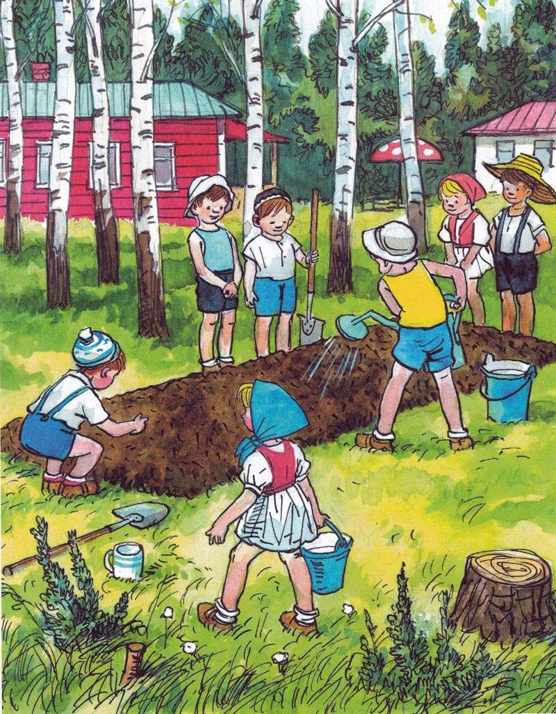
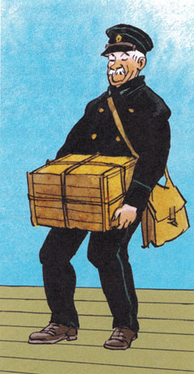
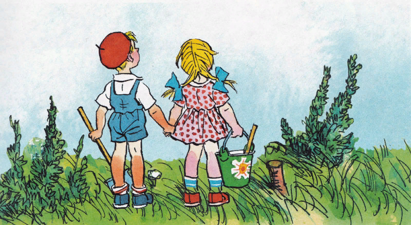

Про репку
Николай Носов
Вот и весна пришла. На небе засияло яркое солнышко. Стало тепло на дворе, даже не нужно было пальто надевать — совсем как летом. Из-под земли вылезла зеленая травка. Молодые липки на улице еще вчера стояли совсем-совсем голые, а сегодня они в один день покрылись маленькими листочками, такими мягкими, нежными.
Очень радостно было смотреть на них! В этот день Павлик пришел из детского сада домой и сказал маме:
— Мама, скоро мы поедем с детским садом на дачу! Нам Ольга Николаевна сказала. Через неделю.
— Вот и хорошо,- сказала мама.- Будешь там отдыхать, на даче.
— А я и не устал вовсе,- ответил Павлик.- Зачем же мне отдыхать? Лучше я буду что-нибудь делать.
— Ну, будешь собирать в лесу ягоды и грибы. Будешь ловить в поле бабочек. Хочешь, я куплю тебе сачок для бабочек?
Павлик задумался:
— Лучше купи мне лопату, чтобы землю копать. Я буду огород сажать.
— Хорошо,- сказала мама и купила ему лопатку.
На другой день Павлик принес лопатку в детский сад и всем показал:
— Смотрите, какая у меня лопата есть! Я буду огород сажать.
Дети окружили его и стали смеяться:
— Разве ребята сажают огород? У тебя все равно ничего не вырастет.
— Почему не вырастет? Вырастет! — сказал Павлик.
— Нет, не вырастет! Нет, не вырастет!
Ну и крик тут поднялся! Ребят было много, и все так громко кричали. Разве мог Павлик перекричать всех? От обиды он чуть не заплакал.
— Ты не плачь,- сказала ему самая маленькая девочка, Ниночка.- Хочешь, будем вместе сажать огород? Я тебе помогать буду, и у нас вырастет большой-пребольшой огород.
— Конечно, вырастет,- сказал Павлик.
Он успокоился и больше не спорил с ребятами. Вечером пришла за ним бабушка, и он сказал:
— Бабушка, бабушка, а вырастет у меня огород?
— Вырастет.
— А что я сажать буду, бабушка? У меня ведь нет никаких семян.
— Я куплю.
— Так ты поскорей купи, бабушка, а то мы скоро уедем.
— 3автра куплю.
На следующее утро Павлик проснулся, а бабушка ему говорит:
— Вот твои семена.
И дала ему небольшой бумажный пакетик. Павлик посмотрел, а в пакете — зернышки, маленькие-маленькие! Каждое величиной с маковку.
— Что же это за семена? — спросил он.
— Это семена репки.
— Отчего же они такие маленькие?
— Такие уж семена у репки,- сказала бабушка.
— Из каждого зернышка вырастает репка? — спросил Павлик.
— Вырастет.
— Да как же она вырастет, бабушка?
— Так уж и вырастет. Сам увидишь.
Бабушка объяснила Павлику, как вскопать землю и сделать грядку и как посадить семена.
Павлик слушал внимательно и все понял. Он взял с собой семена в детский сад и стал показывать ребятам:
— Ребята, ребята, посмотрите, какая у меня репка!
— Какая же это репка? — удивились ребята.- Репка большая, а это какой-то мак.
— Нет, не мак,- сказал Павлик.- Это репкины семена, а из них репка вырастает.
— Как же она вырастет?
— Не знаю.
— Сам не знаешь, а говоришь,- сказали ребята и не стали его слушать.
Неделя прошла быстро, и детский сад уехал на дачу. В первый же день, как только приехали, Павлик пошел к Ольге Николаевне и спросил:
— Ольга Николаевна, можно я буду огород сажать? У меня есть семена.
— Можно,- сказала Ольга Николаевна.
Она показала Павлику место за домом, где можно было устроить грядку. Павлик взял лопатку и принялся вскапывать землю. Прибежали ребята и стали смотреть. Земля была твердая, и копать было трудно. Павлик очень старался и не хотел бросать начатого дела.

Ниночка увидела, что он очень устал, и сказала:
— Дай теперь мне покопать, Павлик, ты устал.
— Ну, покопай немножко,- согласился Павлик,- а потом снова я.
Ниночка взяла лопатку и стала копать.
Ребята смотрели, смотрели, им тоже захотелось покопать.
— Дай и нам покопать,- стали просить они Павлика.
— Копайте,- говорит Павлик.
Ребята по очереди стали копать. Они даже заспорили между собой, кому раньше копать, но Павлик сказал:
— Если будете спорить, то совсем заберу лопату.
Тогда ребята утихли и стали работать без шума. До обеда грядка была готова, а после обеда Павлик разрыхлил землю граблями и принялся сажать семена.
— Дай и нам посадить,- стали просить ребята.
— Не могу. Мне самому интересно,- ответил Павлик.
— Дай! Мы ведь тоже землю копали,- сказал Толя.
— Я ведь не заставлял вас.
— Ну, дай хоть одно зернышко!
Павлик дал ему посадить одно семечко. Тогда и другие ребята стали просить. Пришлось каждому дать по зернышку. Но это ничего. Зернышек было много, так что некоторые даже по две штуки посадили.

На следующий день ребята проснулись рано и сразу побежали в огород. Всем хотелось поскорей посмотреть, не взошли ли семена, но, конечно, семена не могли так быстро взойти.
— Если огород поливать, то семена быстро взойдут,- сказала Надя.
Ребята побежали к Ольге Николаевне, попросили у нее садовую лейку и стали поливать грядку водой. Теперь каждое утро они поливали грядку из лейки и смотрели, не показываются ли из земли ростки. Но прошло несколько дней, а ростков никаких не было видно.

— Что же это такое? — говорили ребята. — Мы, наверное, зернышки вверх ногами посадили — вот они и растут вниз, а не вверх.
И ребята перестали поливать огород. Павлик думал:
«Может быть, мы и на самом деле зернышки вниз головой посадили? Разве разберешь, где у них голова, где ноги! Они маленькие!..»
Еще два дня он поливал огород, а потом тоже бросил.
— Вот тебе и выросла репка! — говорили ребята.- Даром только трудились.
Павлик перестал думать об огороде. Он играл вместе с ребятами, собирал в лесу ягоды, ловил в поле бабочек и придумал устроить во дворе кормушку для птиц.
Ребята приносили остатки от обеда и ужина и кормили птичек, которые прилетали из леса.
Один раз Павлик бежал мимо грядки и увидел, что на ней появилась зеленая травка.
— Ну вот,- сказал он,- уже наш огород зарастает травой! Тут он заметил, что травка растет правильными рядами будто ее кто-то нарочно посадил.
— Да это ведь наша репа растет! — закричал Павлик. Прибежали ребята.
— А может быть, это и не репка? — сказали они.
— Вот увидите, что будет репка,- ответил Павлик.- Раз бабушка сказала — репа, значит, и будет репка.
Ребята снова стали поливать огород. Травка вырастала все больше и больше и превратилась в кустики с большими листьями. Но время незаметно прошло, и наступила пора уезжать в город.
— Ох,- горевал Павлик,- не успела вырасти репка! Он пошел к Ольге Николаевне и спросил:
— А когда мы уедем, кто здесь будет на даче жить?
— Приедут другие дети, из другого детского сада.
— А! Ну, тогда хорошо. Пусть они себе мою репку возьмут, когда вырастет.
Ребята уехали. Стало тихо на даче. Только птички порхали возле пустой кормушки и громко чирикали, будто спрашивали друг друга, куда делись дети. На следующий день приехали ребята из другого детского сада. Они бегали по всему двору, заглядывали во все уголки.
— Глядите, огород! — закричал кто-то.
Отовсюду сбежались дети. Кто-то вырвал несколько кустиков из земли. Тут прибежала самая старшая девочка, Зина.
— Зачем же вы топчете огород? — закричала она.- Как вам не стыдно! Кто-то садил, а вы разоряете! Сажайте кустики обратно!
Ребята поспешно посадили кустики в землю. Зина придумала сделать вокруг грядки ограду. Ребята побежали собирать палочки и сделали из них вокруг огорода забор. С тех пор никто больше не топтал грядку.
Наступило жаркое время. Солнышко по целым дням припекало все сильней и сильней. Две недели подряд не было дождика, даже не появилось ни одной тучки. Земля на грядке вся высохла и потрескалась. Кустики стали вянуть. Листики на них опустились книзу и начали даже желтеть. Однажды Зина шла мимо грядки.
— Бедные кустики,- сказала она,- совсем завяли! Если не будет дождика, они совсем засохнут.
Она взяла кружку, принесла воды и стала поливать грядку.
Ребята увидели и прибежали кто с кастрюлей, кто с чайником, а кто и просто со стаканом.
Грядку полили так, что вся земля стала мокрая. Потом ребята нашли в сарае старую садовую лейку и с тех пор каждый день поливали грядку из лейки.
Через несколько дней кустики ожили. Листочки поднялись кверху и снова стали зеленые. К концу лета они разрослись так пышно, что вся грядка покрылась зеленью, а внизу под листьями виднелись верхушки больших желтых репок.
— Чья же это репка? — спрашивали ребята.- Кто ее посадил?
— Должно быть, те дети, которые здесь жили до нас, из другого детского сада,- сказала Зина.
Перед отъездом с дачи ребята решили убрать огород. Все стали дергать из земли репку и складывать ее на траву в кучку. Куча получилась порядочная.
— Большой урожай получился! — радовались ребята.
Они уселись вокруг и долго любовались репкой. Каждый думал, что теперь делать с ней.
Вот и осень пришла.
— Надевай-ка пальто и калоши, на дворе холодно,- сказала Павлику бабушка, когда он утром собирался идти в детский сад.
Павлик оделся и вышел во двор. Все лужи вокруг замерзли. Тонкий ледок так и хрустел под ногами. А листьев-то сколько с деревьев нападало! Прямо как по ковру идешь.
В этот день Ольга Николаевна занималась с ребятами. Дети играли в школу. Они рисовали картинки, а Ольга Николаевна ставила всем отметки.
Вдруг кто-то постучал в дверь. Ольга Николаевна отворила, и в комнату вошел почтальон. В руках у него был ящик, обшитый материей, на которой большими фиолетовыми буквами был написан адрес детского сада.

— Вам посылка,- сказал почтальон и поставил ящик на стол.
— А что в этой посылке? — стали спрашивать дети.
— Не знаю, ребята. Что-то очень тяжелое — насилу я дотащил,- сказал почтальон.
Ольга Николаевна распорола материю, которой был обшит ящик, и открыла крышку.
— Ничего не понимаю,- пробормотала она.- Какая-то репа!
Все ребята толпились вокруг и приподнимались на цыпочки: каждому хотелось заглянуть в ящик. Павлик даже на стул взобрался.
— Правда, репка! — закричал он.- Вот смешно! Кто же это мог нам репку прислать?
Тут и другие дети стали на стулья взбираться.
— Погодите, ребята, тут письмо есть, — сказала Ольга Николаевна.
Она взяла письмо, которое лежало в посылке, и стала читать:
«Дорогие ребята! Когда вы уехали с дачи, мы ухаживали за вашей репкой. А когда лето кончилось, мы собрали весь урожай. Репка выросла большая и очень вкусная. Мы все ели и нам очень понравилось. Мы узнали ваш адрес и решили послать репку в посылке. Кушайте на здоровье».
— Значит, это та репка, которую мы сажали! — закричали ребята.- Вот какая она большая выросла.
Ольга Николаевна поставила ящик на стул, чтобы всем было видно. Ребята смотрели на репку и прыгали от радости. Ну и крику тут было!
Вечером за ребятами пришли родители. Ребята стали показывать им репку и рассказывать, как они садили ее, как поливали, как она не хотела расти, а потом как начала расти, да не успела вырасти, а потом как ее вырастили другие ребята и прислали в посылке.
С тех пор, когда в детский сад приходил кто-нибудь из взрослых, кто еще не видел репки, ребята вели его в комнату, показывали репку и снова рассказывали всю эту историю с начала и до конца. А когда в детский сад поступал кто-нибудь из новых ребят, то ему первым долгом показывали репку и тоже рассказывали всю эту историю.
Репка пролежала в ящике до середины зимы, и тогда Ольга Николаевна сказала, что репку надо съесть, потому что она не может так долго лежать в теплом помещении. Репку снесли на кухню и попросили тетю Дашу приготовить ее,
Тетя Даша почистила репку, аккуратно нарезала ее кружочками, обдала кипятком, чтобы репка не была горькая, и полила маслом. Ребята сидели за столом, ели репку и хвалили ее:
— Ах, какая вкусная репка!
— А помните, какие были репкины семена? — сказала Таня. Совсем-совсем крошечные! Удивительно, как из них выросла такая репка.
— Это все Павлик придумал,- сказали ребята.- Если б не он, никакой репки не было бы.
